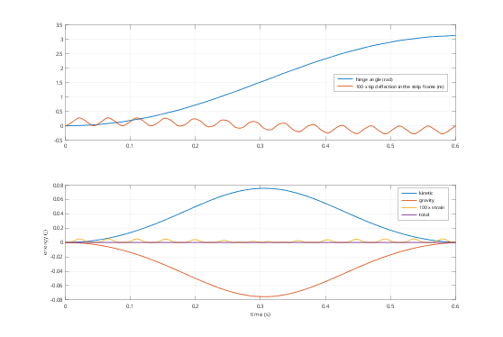
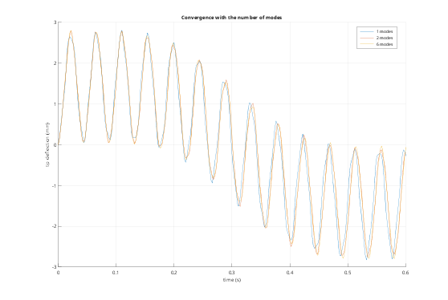
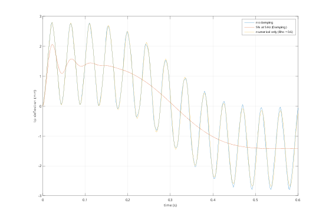
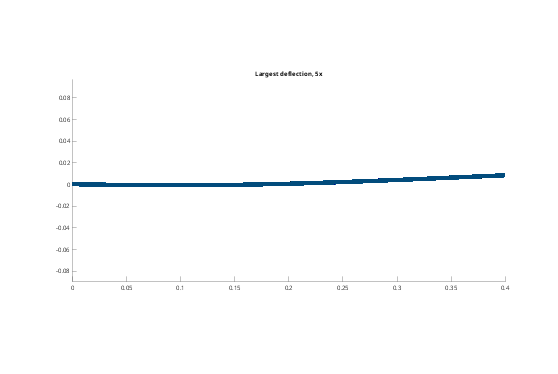

Contents
Tutorial 8 - Elastic bodies in motion
An elastic body moves with a floating frame (at its first coupling) and deforms in that frame by Craig-Bampton modes:
x = r + R*(X0 + Phi*eta)
Large rotations are exact; the deformation is linear. The mass matrix M(eta), the centrifugal and Coriolis forces and gravity follow from inertia invariants computed once from the mesh, so the cost per step does not depend on the mesh size. This tutorial covers:
- a flexible pendulum: energy exchange between motion and deformation
- convergence with the number of modes (Modes)
- physical (Damping) vs numerical (Rho) damping
- the deformation field: modeShapes and node-set signals
- what is not modelled: stiffening by centrifugal or gravity preload
addpath(fileparts(fileparts(mfilename('fullpath')))); out = fullfile(tempdir, 'fmbdTutorials'); if ~isfolder(out), mkdir(out); end fmbd.boxSTL(fullfile(out, 'strip.stl'), [0 -0.01 -0.002], [0.4 0.01 0.002]); soft = fmbd.material(2e9, 0.35, 1200); % a polymer strip
1. A flexible pendulum
A thin strip hinged about y at one end, released horizontally under gravity. The hinge is a coupling on the end face (the strip's frame).
pend = @(modes, damping) pendulum(fullfile(out, 'strip.stl'), soft, modes, damping); % The tip deflection in the strip's own frame follows from the modal % coordinates x.e and the nodal mode shapes (see section 4). s = pend(6, [0 0]); [t, y, x] = s.simulate([0 0.6], Step = 2e-3, Rho = 1); E = s.energy(x); dz = tipDeflection(s, x); figure('Color', 'w'); subplot(2, 1, 1); plot(t, [y.th, 100*dz], 'LineWidth', 1.5); grid on legend('hinge angle (rad)', '100 x tip deflection in the strip frame (m)', 'Location', 'best'); subplot(2, 1, 2); plot(t, [E.kinetic; E.gravity - E.gravity(1); 1e2*E.strain; E.total - E.total(1)], ... 'LineWidth', 1.5); grid on xlabel('time (s)'); ylabel('energy (J)'); legend('kinetic', 'gravity', '100 x strain', 'total', 'Location', 'best'); fprintf('energy drift %.1e J of %.2f J moved (no damping, Rho = 1)\n', ... max(abs(E.total - E.total(1))), max(E.kinetic));

2. How many modes?
The modes are those of the strip clamped at its frame coupling (plus the static modes of the other couplings and loads). For the swinging strip the first bending mode carries almost all of the deformation.
figure('Color', 'w'); hold on for modes = [1 2 6] sm = pend(modes, [0 0]); [t, ~, xm] = sm.simulate([0 0.6], Step = 2e-3, Rho = 1); plot(t, 1e3*tipDeflection(sm, xm), 'DisplayName', sprintf('%d modes', modes)); end hold off; grid on; legend('Location', 'best'); xlabel('time (s)'); ylabel('tip deflection (mm)'); title('Convergence with the number of modes');

3. Damping
Damping = [alpha beta] on the body is physical (Rayleigh) damping of the deformation. Rho < 1 in simulate damps only high frequencies, relative to the time step: it keeps the integration robust without changing the slow motion. Here stiffness-proportional damping of 5% at the first bending mode makes the tip vibration decay.
sc = pend(1, [0 0]); sc.fix('root'); f1 = sc.modes([], 1); % first bending, clamped beta = 2*0.05/(2*pi*f1); sd = pend(6, [0 beta]); [t, ~, xd] = sd.simulate([0 0.6], Step = 2e-3); sn = pend(6, [0 0]); [~, ~, xn] = sn.simulate([0 0.6], Step = 2e-3, Rho = 0.6); figure('Color', 'w'); plot(t, 1e3*[dz, tipDeflection(sd, xd), tipDeflection(sn, xn)]); grid on legend('no damping', sprintf('5%% at %.0f Hz (Damping)', f1), 'numerical only (Rho = 0.6)'); xlabel('time (s)'); ylabel('tip deflection (mm)');

4. The deformation field
modeShapes gives the nodal mode shapes Phi and the node positions X0 in the body frame: the displacement field at any step is Phi*eta, e.g. for strains or stresses. plot and animate show it with Scale.
[Phi, X0] = s.modeShapes('strip'); k = find(abs(dz) == max(abs(dz)), 1); % the largest deflection u = reshape(Phi*x.e(:,k), 3, [])'; % displacement field (body frame) fprintf('largest deformation %.2f mm at node (%.3f, %.3f, %.3f) m\n', 1e3*max(vecnorm(u, 2, 2)), ... X0(find(vecnorm(u, 2, 2) == max(vecnorm(u, 2, 2)), 1), :)); figure('Color', 'w'); s.plot(x, k, Scale = 5); view(0, 0); title('Largest deflection, 5x');
largest deformation 2.80 mm at node (0.400, 0.010, -0.002) m

5. What is not modelled
The deformation is linear in a moving frame. This misses the stiffening of a part by its own preload: centrifugal tension in a fast-spinning blade, or the change of bending stiffness of a long, gravity-loaded slender part. It matters only when the preload stresses are significant compared with the part's bending stiffness, e.g. rotor blades near their first frequency; for robot links and grippers it is negligible.
function s = pendulum(file, mat, modes, damping) % Strip hinged about y at x = 0, with the tip deflection in the strip frame. s = fmbd.System(Gravity = [0 0 -9.81]); s.add(fmbd.Body.elastic(file, mat, Size = 0.004, Order = 2, Name = 'strip', Modes = modes, ... Damping = damping)); s.couple('strip', @(X) X(:,1) < 1e-6, Name = 'root', Point = [0 0 0]); s.couple('strip', @(X) X(:,1) > 0.4 - 1e-6, Name = 'tip'); s.joint('ground', 'root', 'revolute', Axis = [0 1 0], Name = 'hinge'); s.output('th', 'hinge'); end function dz = tipDeflection(s, x) % Average z deflection of the tip nodes in the strip frame: rows of Phi*eta. [Phi, X0] = s.modeShapes('strip'); tip = find(X0(:,1) > 0.4 - 1e-6); dz = (mean(Phi(3*tip, :), 1)*x.e)'; end
energy drift 9.4e-07 J of 0.08 J moved (no damping, Rho = 1)